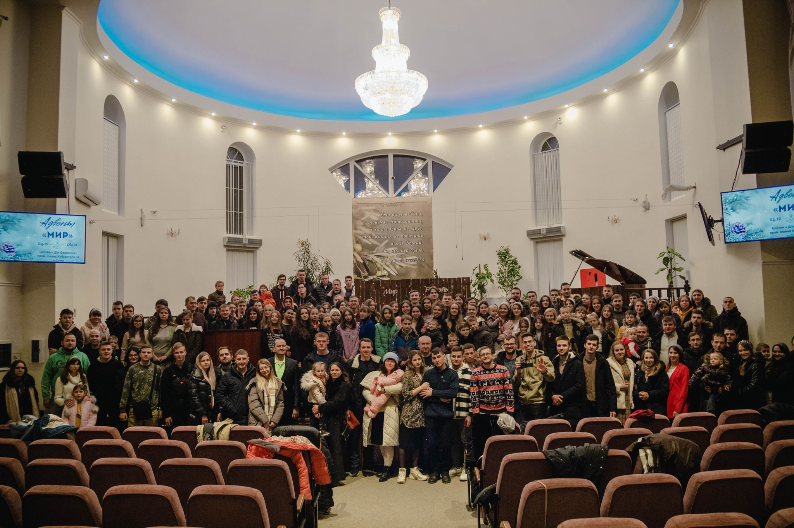
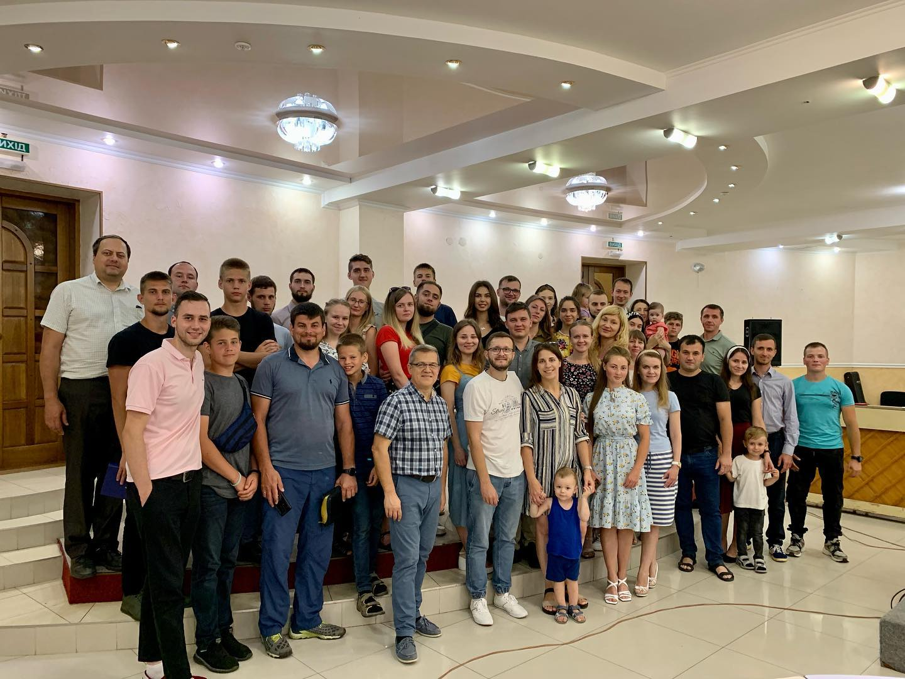

Наша церква

Наша молодь

Святе водне хрещення
Назва церкви: Церква євангельских християн-баптистів м. Суми
Адреса: провулок Іоанна Хрестителя, 14, Sumy, Ukraine
https://gospel-house.netlify.app/
Опис: Церква євангельских християн-баптистів м. Суми - це чудове місце для духовного зростання та спілкування з ближніми. Ми запрошуємо всіх бажаючих приєднатися до нашої громади.